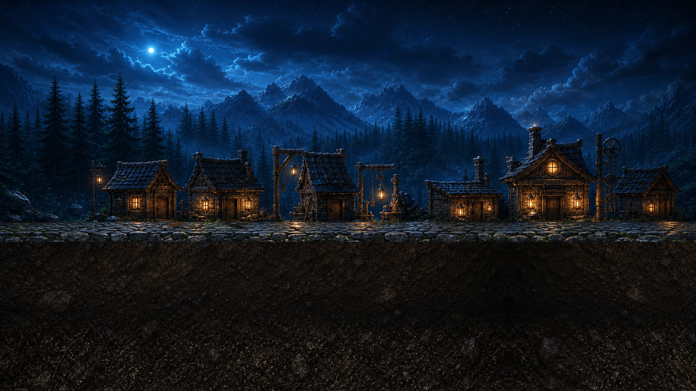

UNDERSTAR · real production surface · review only
The world moves now.
Actual town, sky, surface cap, and Level One earth. Four Seedance studies with visible forest-wide wind and deterministic palindrome loops.

Real runtime sources8 sec forward / reverse
04
Loading real surface loop…
Focused Seedance pass
Choose the wind language
Keys 1–4 switch candidates. Earth movement is measured as unwanted drift, not intended life.
- Upper-world motion
- —
- Earth drift
- —
- Encoded loop seam
- —
- World contract
- One surface · continuous earth